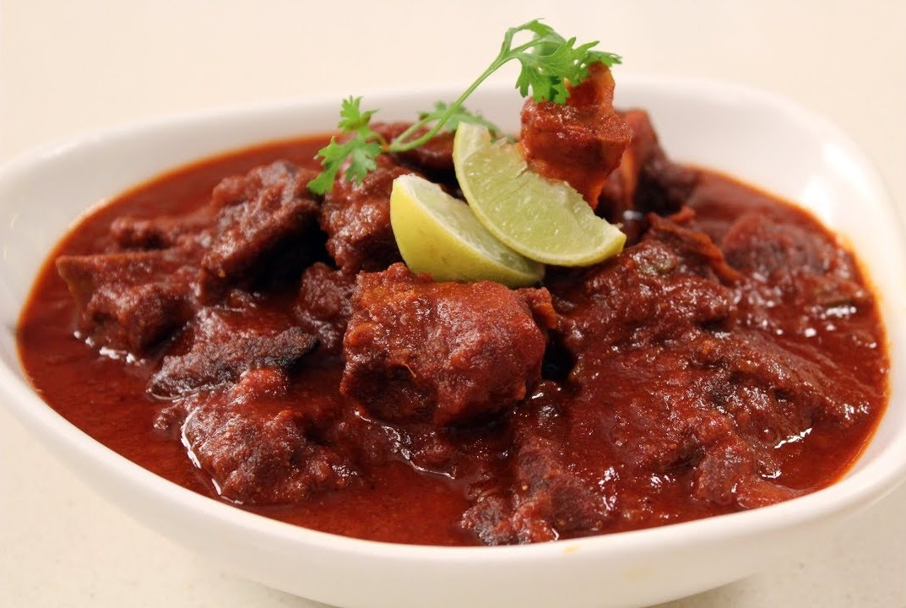

Laal Maas

Laal maas is a spicy lamb curry from Rajasthan.
This is a homestyle curry. Not restaurant style. Slow cooking. Gentle simmering. Tender, flavourful lamb. And a
crazy delicious sauce.
Ingredients:
- 1 kg Mutton, curry cuts
- 2 tbsp Ginger Garlic Paste
- ¼ cups Ghee
- 2-3 Cloves
- 10 Black Peppercorns
- 4 Green Cardamom
- 2 Black Cardamom
- 250 gms Onion
- Salt To Taste
- 20 Mathania Chilli paste (use soaked chillies)
- 1½ tbsp Coriander Powder
- ½ tsp Red chilli powder
- ½ tsp Cumin Powder
- 200 gms Curd, beaten
- 2 tbsp Mustard Oil
Steps:
- In a mixing bowl, add mutton, ginger garlic paste and marinate well as keep it aside for 1 hour.
- In a large sauce pot, heat ghee, add cloves, black peppercorns, small cardamom, black cardamom let the whole
spices splutter.
- Add onions and saute till it gets light brown. Add the marinated mutton and saute for 4-5 minutes.
- Add mathania chilli paste and saute well for another 8-10 minutes to remove rawness of the chilies. Add salt
to taste & mix well. Cover and let it cook for 10-12 minutes on low flame.
- In a bowl add curd, coriander powder, red chilli powder, cumin powder, mustard oil and mix well.
- Transfer the curd mixture into the pot and stir well. Cover with the lid and cook for 30 minutes on low
flame till the mutton becomes tender.
- Garnish with coriander sprig and serve hot with bajra roti.